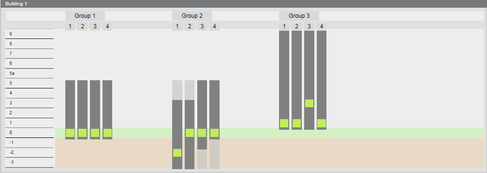
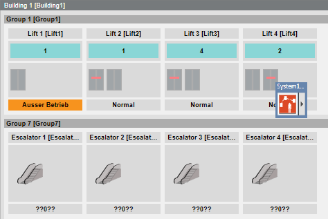
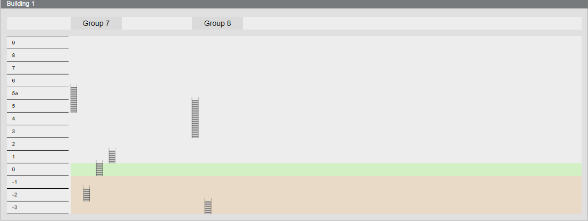
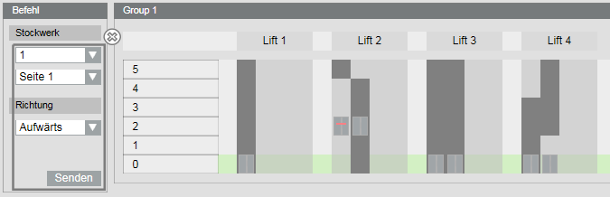
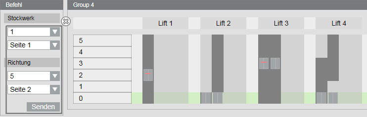
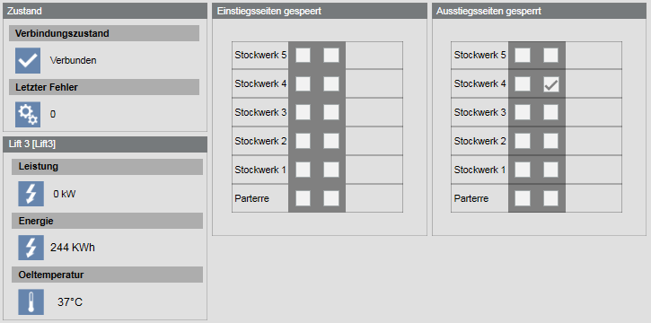
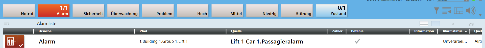

Schindler Elevators
Displaying a Building Overview and Elevator Locations
- System Manager is in Operation mode.
- The elevators and escalators are online.
- In System Browser, select logical view.
- Select Logical > [Subsystem name] > [Building name]
- The elevators and escalators are displayed in the Standard tab.
- A different template is selected automatically for display based on building height:
- Floors -9 to 20
- Floors -9 to 50
- Floors -9 to 150 - The Extended Operation tab displays information on Floor IDs and Floor names.

- Click the group name for Floor Call or Boarding Call.
- Click Next
 .
. - Displays the elevators and escalators

- Displays operation and information in the Extended Operation tab:
- Click the group name for Floor Call or Boarding Call.
- Click the elevator name for Lock Boarding Side or Lock Destination Side.
- Click Next .
- Displays the escalators

Commanding an Elevator Group with a Floor Call
Scenario: You are located on floor 1, boarding side 1 and you want to call an elevator to go to floor 5, destination side 2.
- System Manager is in Operation mode.
- In System Browser, select logical view.
- Select Logical > [Subsystem name] > [Building name] > [Group x].
Operation in the Graphic
- In the Floor drop-down list, select (top) your default floor.
- In the Floor drop-down list, select (bottom) the boarding side.
- In the Direction drop-down list, select the drive direction.
- Click Send.
- The elevator arrives.
- Enter the elevator and select the destination floor.

Extended Operation Tab
- In the Extended Operation tab, select the Command Floor Call property.
- Click Floor Call.
a. In the Direction drop-down list, select the drive direction.
b. In the Floor drop-down list, select your default floor.
c. In the Side drop-down list, select the boarding side. - Click Send.
- The elevator arrives.
- Enter the elevator and select the destination floor.
Commanding an Elevator Group with a Boarding Call
Scenario: You are located on Floor 1, boarding side 1 and want to go to Floor 5, destination side 2. No elevator is available on this floor.
- System Manager is in Operation mode.
- In System Browser, select logical view.
- Select Logical > [Subsystem name] > [Building name] > [Group x].
Operation in the Graphic
- In the Floor drop-down list, select (top) the default floor.
- In the Floor drop-down list, select (bottom) the boarding side.
- In the Direction drop-down list, select (top) the destination floor.
- In the Direction drop-down list, select (bottom) the destination side.
- Click Send.
- The elevator arrives.

Extended Operation Tab
- In the Extended Operation tab, select the Command Boarding Call property.
- Click Boarding Call.
a. In the Dest. Floor drop-down list, select the destination floor.
b. In the Dest. Side drop-down list, select the destination side.
c. In the Floor drop-down list, select the default floor.
d. In the Side drop-down list, select the boarding side. - Click Send.
- The elevator arrives.
Commanding Individual Elevators
Scenario: The elevator must be commanded to a specific destination floor.
- System Manager is in Operation mode.
- In System Browser, select logical view.
- Select Logical > [Subsystem name] > [Building name] > [Group x] > [Elevator x].
- In the Extended Operation tab, select the Destination Call property.
- Click Destination Call.
a. In the Floor drop-down list, select the destination floor.
b. In the Side drop-down list, select the boarding side. - Click Send.
- The elevator goes to the destination floor.
Locking/Unlocking Boarding
Scenario: Boarding on floor 2, must be locked on side 2.
- System Manager is in Operation mode.
- In System Browser, select logical view.
- Select Logical > [Subsystem name] > [Building name] > [Group x] > [Elevator x].
Operation in the Graphic
- Select Setting lock boarding.
- Select the check box for the floor and side.
- The floor is identified by in the Group overview page.
Extended Operation Tab
- In the Extended Operation tab, select the Command Lock Boardings property.
- Click Lock Boardings.
a. In the Floor drop-down list, select the floor for locking.
b. In the Lock drop-down list, select Lock or Unlock.
c. In the Side drop-down list, select the boarding side for locking. - Click Send.
- The floor is identified by in the Group overview page.
Locking/Unlocking Destination
Scenario: Destination on floor 4, must be locked on side 2.
- System Manager is in Operation mode.
- In System Browser, select logical view.
- Select Logical > [Subsystem name] > [Building name] > [Group x] > [Elevator x].
Operation in the Graphic
- Select Setting lock destination.
- Select the check box for the floor and side.
- The floor is identified by in the Group overview page.

Extended Operation Tab
- In the Extended Operation tab, select the Command Lock Destinations property.
- Click Lock Destination.
a. In the Floor drop-down list, select the floor for locking.
b. In the Lock drop-down list, select Lock or Unlock.
c. In the Side drop-down list, select the boarding side for locking. - Click Send.
- The floor is identified by in the Group overview page.
Acknowledging Passenger Alarm
Scenario: A passenger alarm is triggered in the elevator cab.

- Click
 .
. - The alarm sounder is switched off and the state changes
 .
. - On the Alarm Summary bar, click Event.
- The alarm source is displayed in the Source column.
- Contact person in distress (intercom system, go there, telephone, etc.).
- Click the event line.
- In the Commands column, click
 .
.
- The event is acknowledged. Active alarms are displayed in the Alarm Summary Bar Alarm 0/1.
Check the Connection State
- System Manager is in Operation mode.
- In System Browser, select Logical View.
- Select Logical > [Subsystem name] > [Building name] > [Group x].
- In the Extended Operation, the Connection State property displays
ConnectedorNot Connected. No connection, see No Communication with the OPC Server.